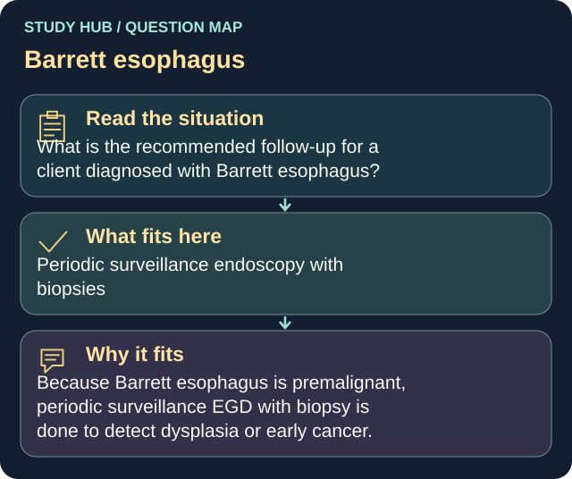

What is the recommended follow-up for a client diagnosed with Barrett esophagus?
Answer
Periodic surveillance endoscopy with biopsies
Reasoning
Because Barrett esophagus is premalignant, periodic surveillance EGD with biopsy is done to detect dysplasia or early cancer.
Why the other answers do not fit
- Annual colonoscopy
- Monthly barium enema
- No further follow-up is needed
Shared reasoning for choices without a separate note: Because Barrett esophagus is premalignant, periodic surveillance EGD with biopsy is done to detect dysplasia or early cancer.
